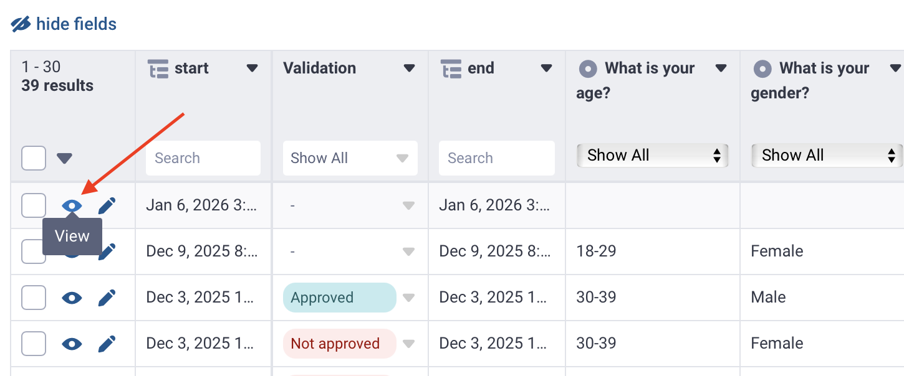
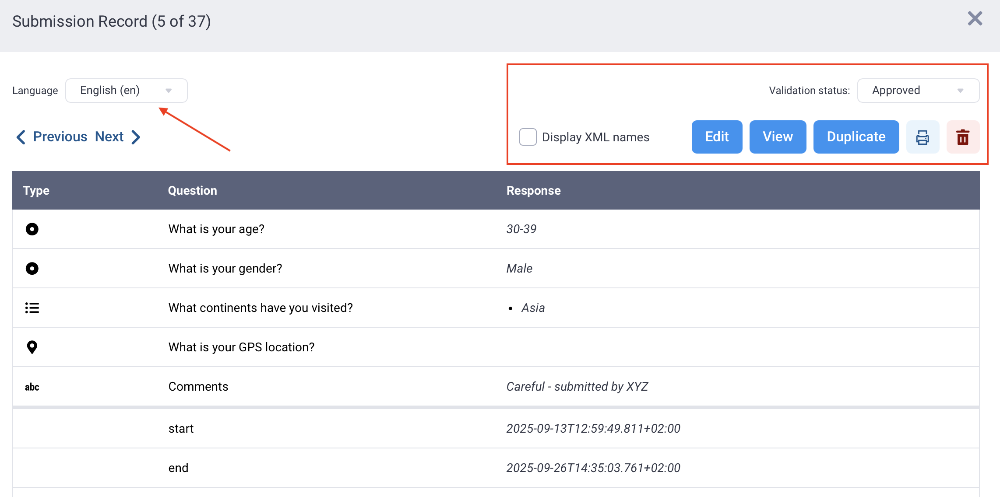

Search the knowledge base, browse our resources, and visit our Community Forum for more detailed information
Dernière mise à jour : 5 juin 2026
Le mode Tableau dans la section DONNÉES de votre projet KoboToolbox offre une vue d’ensemble complète et personnalisable de toutes les soumissions du projet. Par défaut, toutes les soumissions sont affichées, les plus récentes en premier. Ce mode est l’espace de travail principal pour explorer les données, surveiller leur qualité, valider les soumissions et effectuer des modifications.
Cet article explique comment :
Configurer le tableau de données en mode Tableau
Filtrer et trier vos données
Voir et valider les soumissions
Pour en savoir plus sur la modification de vos données, consultez l'article Modifier et supprimer vos données.
Les propriétaires de projet peuvent contrôler l’accès aux données en attribuant des permissions distinctes pour voir, modifier, valider et supprimer les soumissions. Par exemple, ils peuvent autoriser certains membres de l’équipe à voir et valider les données tout en restreignant les permissions de modification et de suppression.
Pour en savoir plus sur les droits d'accès au niveau de l'utilisateur pour voir, valider et modifier les données, consultez l'article Droits d'accès au niveau de l'utilisateur.
Le tableau de données en mode Tableau affiche par défaut toutes les soumissions et tous les champs. Dans de nombreux projets, une vue plus ciblée est nécessaire. Ajuster ce qui apparaît dans le tableau vous permet de travailler plus efficacement, en particulier pour les formulaires comportant de nombreuses questions ou des sous-groupes. Vous pouvez choisir les champs à afficher et la façon dont les données sont présentées pour mieux correspondre à votre flux de travail.

Au-dessus du tableau de données, vous pouvez configurer les paramètres suivants :
Masquer les champs : Cliquez sur masquer les champs pour afficher la liste de toutes les questions et de tous les champs de votre formulaire. Tous les champs sont sélectionnés par défaut. Décochez la case d’un champ pour le masquer, puis cliquez sur Appliquer pour enregistrer vos modifications.
Basculer en plein écran : Cliquez sur Basculer en plein écran pour agrandir le tableau de données afin qu’il occupe toute la fenêtre du navigateur.
Options d’affichage : Cliquez sur Options d’affichage pour contrôler la façon dont les libellés, les groupes et les balises HXL sont affichés dans le tableau. Les options d’affichage suivantes peuvent être configurées :
Option d’affichage |
Description |
|---|---|
Afficher les libellés ou des valeurs XML ? |
Choisissez d’afficher les valeurs XML ou les libellés complets des questions et des choix dans n’importe quelle langue du formulaire dans votre tableau. |
Afficher le nom des groupes dans l’en-tête du tableau |
Choisissez si les en-têtes de colonnes du tableau incluent le nom du groupe de questions (par ex., |
Afficher les tags HXL |
Affiche les balises du langage d’échange humanitaire (HXL) si elles ont été ajoutées à votre formulaire. |
Dans le tableau de données, vous pouvez cliquer sur un en-tête de colonne et sélectionner Masquer le champ pour supprimer les champs dont vous n’avez pas besoin, ou Figer le champ pour garder un champ fréquemment utilisé visible pendant le défilement.
Remarque : Ces paramètres affectent le mode Tableau pour tous les utilisateurs du projet.
Chaque soumission dans le tableau de données inclut des champs générés par le système qui permettent d’identifier les soumissions et de suivre leurs détails. Ces champs apparaissent sous forme de colonnes distinctes à la fin du tableau et ne peuvent pas être modifiés.
Champ |
Description |
|---|---|
|
Un identifiant unique pour la version du formulaire utilisée pour la soumission. Ce champ est utile si votre formulaire a évolué au fil du temps et que vous devez savoir quelle version a collecté les données. |
|
Un numéro d’identifiant généré par le serveur pour la soumission. Il est attribué une fois que la soumission parvient à KoboToolbox et est unique sur ce serveur KoboToolbox. |
|
Un identifiant généré automatiquement pour la soumission. Il peut aider à identifier une soumission, mais il peut changer si la soumission est modifiée ; il n’est donc pas le champ le plus fiable pour un suivi à long terme. |
|
La date et l’heure auxquelles la soumission a été reçue par le serveur KoboToolbox. Dans les exports, cette valeur est stockée en UTC. Dans le tableau de données, elle est affichée dans le fuseau horaire de l’utilisateur. |
|
Le nom d’utilisateur de la personne qui a soumis les données. Ce champ est toujours enregistré pour les soumissions KoboCollect, et est enregistré pour les soumissions via formulaire web uniquement lorsque l’authentification est requise. |
|
Un identifiant stable pour la soumission au sein du projet. Il est tiré du |
Remarque : Ces champs diffèrent des métadonnées de formulaire activées par l'utilisateur, car ils sont générés automatiquement pour chaque soumission. Vous n'avez pas besoin de les ajouter lors de la création du formulaire.
Par défaut, les soumissions dans KoboToolbox apparaissent dans le tableau de données dans l’ordre de soumission, les entrées les plus récentes en haut. Dans les grands projets, le filtrage et le tri sont essentiels pour explorer, examiner et nettoyer les données. Ils vous permettent de trouver rapidement des répondants spécifiques, d’examiner des tendances et d’identifier les soumissions qui nécessitent une attention particulière.
Remarque : Le mode Tableau dans KoboToolbox offre des fonctions de filtrage et de tri de base pour la surveillance et la modification des données. Pour une analyse de données plus avancée, notamment le filtrage avec plusieurs conditions, nous recommandons d'exporter votre base de données et d'utiliser un logiciel de tableur ou d'analyse.
Pour chaque colonne du tableau de données, vous pouvez utiliser les fonctionnalités suivantes :
Recherche : Utilisez la barre de recherche au-dessus des champs de type texte, chiffre et date pour filtrer les résultats. Par exemple, vous pouvez rechercher un identifiant unique ou filtrer par un âge spécifique.
Filtre : Pour les champs basés sur des questions à choix multiple, cliquez sur Afficher tout dans l’en-tête de colonne pour ouvrir une liste d’options de réponse. Sélectionnez une option pour filtrer les réponses.
Tri : Cliquez sur un en-tête de colonne et choisissez Trier A → Z ou Trier Z → A pour modifier l’ordre des soumissions.
Remarque : Le tri du tableau s'applique à tous les utilisateurs et persiste après que vous avez quitté le mode Tableau. La recherche et le filtrage ne s'appliquent qu'à vous pendant que vous êtes en mode Tableau et se réinitialisent automatiquement lorsque vous le quittez.
Ouvrir une soumission individuelle vous permet d’examiner toutes les données d’un seul répondant. La vue de soumission individuelle inclut des outils pour examiner et gérer une soumission.
Pour ouvrir une soumission, cliquez sur Afficher dans la ligne correspondante.

La fenêtre de soumission affiche toutes les réponses et inclut les options suivantes :
Voir les données dans n’importe quelle langue du formulaire.
Afficher les valeurs XML à côté de chaque question.
Afficher et Modifier la soumission sous forme de formulaire web.
Dupliquer la soumission.
Imprimer la soumission.
Supprimer la soumission.
Attribuer un statut de validation.

Dans la vue de soumission individuelle, naviguez entre les soumissions à l’aide de < Précédent et Suivant >.
La validation des soumissions aide les équipes de projet à maintenir la qualité des données, à suivre l’état de la révision et à signaler les problèmes nécessitant un suivi. Le statut de validation apparaît sous forme de colonne dédiée dans le mode Tableau, et les utilisateurs disposant des permissions appropriées peuvent le mettre à jour pour des soumissions individuelles ou multiples.
Les statuts disponibles sont :
Approuvé : La soumission a été examinée et confirmée comme complète, exacte et utilisable pour l’analyse.
Non approuvé : La soumission ne répond pas aux exigences de qualité des données et doit être exclue de l’analyse ou supprimée de la base de données.
En attente : La soumission nécessite un examen. Une vérification ou un suivi supplémentaire est nécessaire avant que les données puissent être acceptées ou rejetées.
La validation permet un examen structuré des données au sein d’équipes collaboratives. Par exemple, les réviseurs peuvent filtrer le tableau pour n’afficher que les soumissions nécessitant un examen.
Remarque : Un propriétaire de projet peut accorder la permission Valider les soumissions à d'autres utilisateurs séparément de la permission Modifier les soumissions.
Le statut de validation peut être appliqué à plusieurs soumissions à la fois, ce qui est utile pour les révisions à grande échelle ou les contrôles qualité.
Pour valider des soumissions en masse :
Sélectionnez les soumissions à l’aide des cases à cocher.
Cliquez sur Changer le statut.
Choisissez un statut de validation.
Remarque : Vous pouvez sélectionner toutes les soumissions de la page actuelle en cochant la case dans l'en-tête du tableau. Pour sélectionner toutes les soumissions du projet sur toutes les pages, cliquez sur la flèche à côté de la case à cocher et choisissez Sélectionner tous les résultats.

_submitted_by est renseigné uniquement lorsqu'une soumission est associée à un nom d'utilisateur KoboToolbox. Dans KoboCollect, ce champ est toujours enregistré. Dans les formulaires web, il est enregistré uniquement lorsque le projet requiert une authentification. Si le formulaire autorise les soumissions sans nom d'utilisateur ni mot de passe, ce champ sera vide._submitted_by pour les soumissions via formulaire web, accédez à FORMULAIRE > Collecter des données et désactivez l'option « Autoriser les soumissions sans nom d'utilisateur ni mot de passe pour ce formulaire ».
Did you find what you were looking for? Was the information clear? Was anything missing?
Share your feedback to help us improve this article!